|
Safety Upgrades |
|
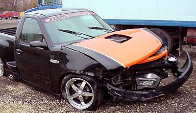 Rob G survived this street wreck, but his stunning truck didn't. |
||
| 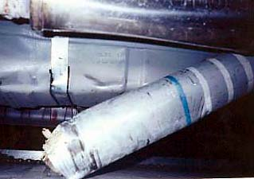Driveshaft loops are popular in drag racing, but are cheap insurance for any Lightning. A driveshaft loop holds the driveshaft in place if one of the u-joints fails. Not only is this safer for anyone behind, but it also could prevent a disastrous result if the driveshaft plants after separation in the front and forces the truck to "pole vault" over it. And, as can be seen in the image to the right, the gas tank could be ruptured in the process. | ||
| 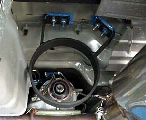 There are at least three Lightning driveshaft loop options. The Metco loop is sold by Chikenears and other vendors . The Metco loop requires removal of the driveshaft and through-the-cab floor drilling, but gets big points for custom design and stealth. | ||
|
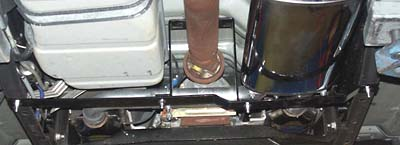
The loops offered by Powersurge Performance ($70), Johnny Lightning ($60), and Competition Engineering are two-piece designs. They do not require removal of the drive shaft and install with only two bolts.
|
||
| A final option is Ruslow's driveshaft loop. The driveshaft must be removed (but only four bolts hold it on). The bar arrives unpainted. Ruslow (Stan Martin) can be contacted through his forum at NLOC , but I don't know whether he is still making any Lightning parts. | ||
| 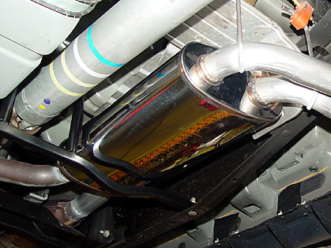 Here is the Ruslow bar installed on my truck (old photos; I now have an X-Factor). | ||
| 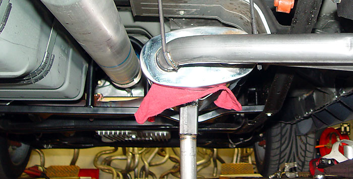 | ||
|
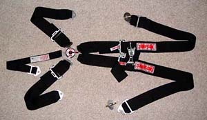 It is difficult to place a 5-point harness in the Lightning. There are a variety of rules from different sanctioning bodies and a number of recommended practices from harness manufacturers. Unfortunately, in addition to the inherent belt placement issues with a short-cab truck, the rules and recommendations are in apparent conflict. Consider the following from Simpson:
The shoulder strap mounting is the real issue. It is difficult to reconcile the various sanctioning body rules. Note that the stock belts would be fine for most classes, but when a harness is added, it usually must comply with the rules for the full cage classes. A sampling of the various rules follows: From the Detroit Council of Sports Car Clubs rules: Shoulder belt mounts must be located so that the belt leaves the top of the shoulder at an angle of not more than 25 degrees below the horizontal (horizontal or higher is preferred) . A low mount will generate compressive forces in the spine during impact, which could cause injuries. Where shoulder belts are mounted to a roll bar, the mount should be designed to minimize the likelihood of cutting the belt during a rollover. All belts must be located on either a factory stock mounting location or to a secure mount in the frame, body or roll bar/cage structure. Mounts to sheet metal must be suitably reinforced to prevent pullout. . . . From the BMW CCA Club Racing rules: 5 or 6 point 3" competition harness (with 2" sub belt), no more than five years old and meeting SFI-16.1 standards, properly mounted, are required. Harness cannot be mounted to the seat or seat rail. Mounting must be to the chassis backed by large diameter washers or to the roll bar. No two harness straps can be attached to a single mounting bolt. No Y-type shoulder harnesses are allowed. The angle of the shoulder harness cannot be above nor exceed 40 degrees below the horizontal plane of the shoulders . Modifications to or replacement of the driver�s seat may be necessary to meet this requirement. If the height or width of the seat back prevents the shoulder harness straps from remaining securely on the shoulders in all situations, the seat must be modified to remedy this condition. From the Big Bend Open Road Race rules for modified classes (stock belts okay for stock classes): If a Sternum Belt system is used the Lap belt must be placed in the proper position at the pelvis and the Anti-submarine belt must be used to keep the lap belt down and in the proper position.
2. Mounting Points must be at, or on, the Roll Cage, frame member or body panel.
It appears that the sanctioning bodies are in substantial disagreement on shoulder harness anchor placement. I have ordered the SCCA rulebooks, which is what I'm most concerned with. 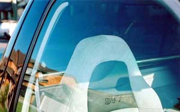Although Ruslow used to make a harness bar which went across the rear of the cab and attached at the top stock belt mounting points, it is no longer in production. Plus, the harness bar would not allow the seat to be all the way back, a substantial compromise for those with long legs. Additionally, many serious racers have reservations about using shoulder harnesses around the sides of the seat, as opposed to running the belts through holes in the seat. The theory is that the shoulders will slip through the harnesses and allow the torso to slip free of the harness. If not passed through the seats, some recommend crossing the belts in the rear. I am fortunate to live within driving distance of a Simpson showroom, so I went directly to the source for installation assistance. Here is what we came up with (image above is of the complete setup): Lap belts: 3" camlock quick disconnect, black (part # 32024). Mount using stock belt mounting bolts. This may violate the mounting practices shown in Figures 3 and 4 above for the inside belt, as that mount is more horizontal than vertical. 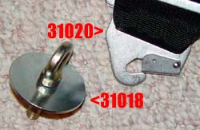 Shoulder straps: 3" with camlock fittings (part # 33004). Mount to the rear cab wall with eye bolts (2 @ part # 31018). The belts are terminated with quick disconnect fittings (2 @ part # 31020). More on the compromises with this placement below. Anti-sub strap: 3" camlock quick disconnect (part # 34102). Mount to the crossbar under the seat itself--part of the seat bottom cushion frame. This may require some re-thinking, as many of the rules below require mounting to the floor. 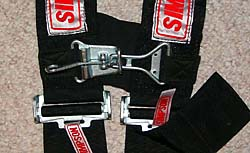Sternum harness option: This ties the shoulder belts together. There is no way that the shoulder belts could separate. Must be ordered at the time the belts are made, as it is a sew-in option.
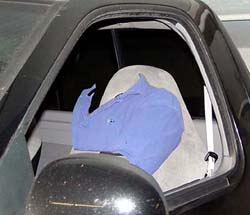 Anchoring of the shoulder straps on the rear cab wall, with suitable reinforcement of the sheet metal on the outside of the cab, is a compromise and may not pass tech muster. Unless you are really short in the trunk, this mounting position would violate the 45 degree rule above, much less the 25 degree or 2" rule, at least for my 6'6" body. The image to the right is an actual picture of my seating position taken with a tripod-mounted camera. As you can see, "headrests" are of little use to me. Further, some sanctioning bodies reportedly require that 5-point harnesses pass through the seat. Some have cut the seat and made a passthrough (see the full cage pics below). That is obviously a non-starter for me, as the belts would be in between my shoulders. The no-longer-produced Ruslow harness bar would solve the too-low problem, but might introduce a too-high problem. Recall from the rules above that some sanctioning bodies will not allow a shoulder strap mounting point to be higher than where the strap goes over the shoulder. It is difficult to tell from the one photo I have whether 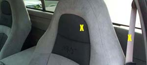 The rear cab wall mounting of the shoulder straps would require drilling holes completely through the rear wall, meaning that the bed must be removed or slid back for access. The holes should be at the same width as the belts are where they come off of the shoulders. In other words, the straps should make parallel lines from the top of the shoulders to the eye bolts. This would require mounting in approximately the position of the yellow X's. Drilling the firewall up this high is tricky. As shown in the photos below, this area can't be used, as the rear window is attached there. Note the relationship between the plastic trim piece and the stud underneath marked with the red arrows. 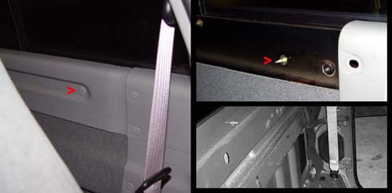 The eye bolt will have to be placed on the area where the carpet begins. This introduces another problem--the eye bolt is not long enough to clear the plastic trim piece. Thus, a rather large hole would have to be cut in the trim piece. If you have any ideas, please e-mail me. |
||
|
Racing seats will integrate with the harness to provide superior protection in an accident. Also, by keeping the driver steady, racing seats may actually prevent an accident from occurring in the first place. Here are some Recaro Sports in Don's Bolt's truck. 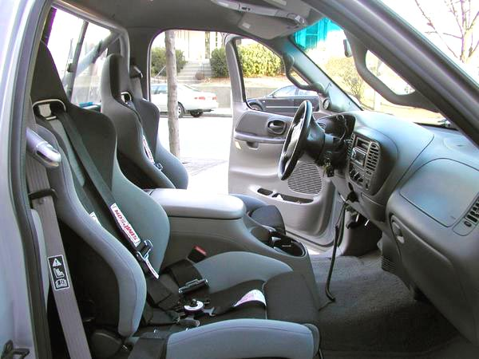 Here is a pimpy custom Recaro Sport in black leather and gray alcantara fabric (the same faux suede used in the stock seats): 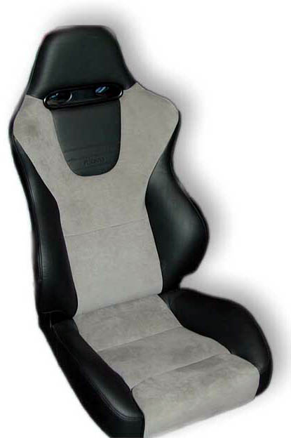 The Courbeau TRS is also a good choice for a truck. Here is a set installed in a Dodge R/T: 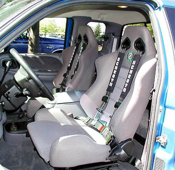 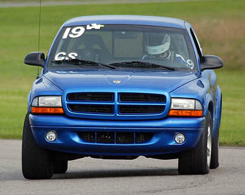 The Corbeau wide lineup (from left to right): TRS ($370), Forza II ($250), and FX1 ($350). 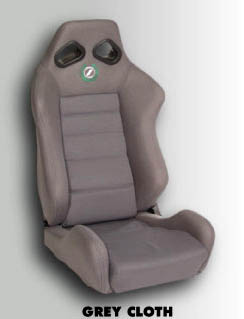 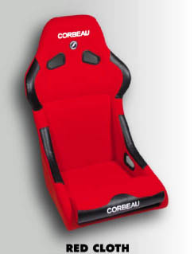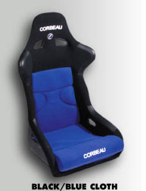 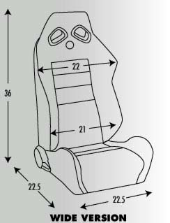 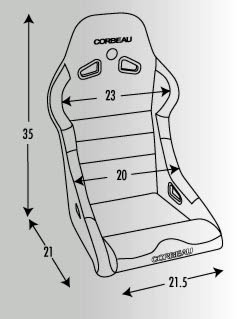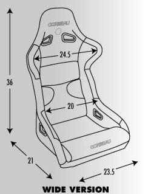 Finally, check out the Sparco Torinos (come stock in alcantara) in Zorprime's Lightning: 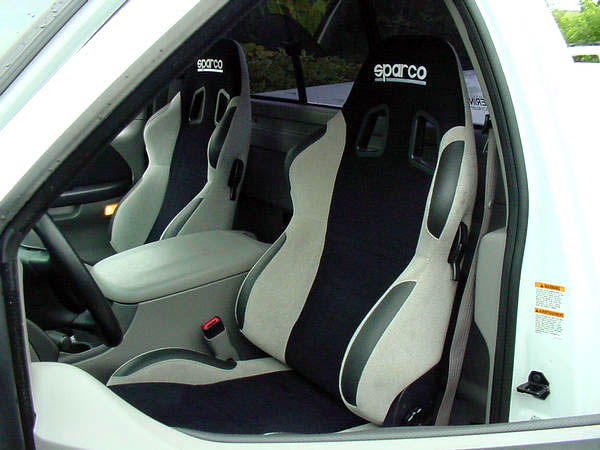 |
||
|
A roll cage is for the truly hard-core. Just look at the work required: And get out your wallet. |

{kind=link}
{kind=link}
{kind=link}
{kind=link}
{kind=link}